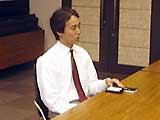
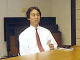

発売当初、これほどヒットするとは予感していましたか？ 発売当初、これほどヒットするとは予感していましたか？
 川口>> いいえ、まったく予想はしていませんでした。ただ、できあがったソフトを見てみたら、とてもおもしろかったんですね。そこで、任天堂としても積極的に売っていきましょうということになり、テレビＣＭなどもオンエアしました。 川口>> いいえ、まったく予想はしていませんでした。ただ、できあがったソフトを見てみたら、とてもおもしろかったんですね。そこで、任天堂としても積極的に売っていきましょうということになり、テレビＣＭなどもオンエアしました。
発売後の川口さんはどういった活動をしていたんですか？
川口>> 発売後はポケモンをみなさんに知ってもらうためのプロモーションを行ないました。とにかくいいゲームであるということはわかっていたので、石原さんも私も小学館の『コロコロコミック』や学年誌の編集部に直接宣伝に行きましたよ。そういった活動が功を奏してだんだん売れてきたんだと思います。２月にソフトが発売されて、３月、４月、５月と毎月注文が増えてきたんです。それはうれしかったですね。
大ヒットを予感したのはいつごろですか？
川口>> 私自身がターニングポイントだと思ったのは、『コロコロコミック』のミュウプレゼントですね。20人のプレゼントに7万8千通もの応募が来た。このとき、「これはスゴい」と実感しました。その次がアニメです。アニメ化は、任天堂社内でも賛否両論だったんですが、私たちは「やるべきじゃないか」と。その結果、キャラクターグッズができ、アメリカやアジアでも放映された。ポケモンがいよいよメジャーになったんですね。
キャラクターグッズに関しても「やるべきだ」と思いましたか？
 川口>> 「やるべきだ」と思っていましたし、アニメがはじまると、今度はいろいろなところからどんどん「キャラクター商品を発売させてほしい」という申し出が殺到したんです。初期にポケモングッズのライセンスをとった小さな会社の中には、５年ぶんの売上を半年で達成したところもあったそうです。
|
それはスゴいですね！ まさにお化けソフト、キラーソフトなんですね。
川口>> キラーソフトというのはほかを圧倒するクリエイティブがあるということですよね。「ユーザーの期待通りにおもしろい」というソフトは、良いソフトだけどキラーではないんです。本当のキラーソフトはユーザーの期待を上回るものを提供していくソフトだと思います。そういう意味では、ポケモンはまさにキラーソフトですし、今後もユーザーの期待をいい意味で裏切っていくんじゃないでしょうか。
今後のポケモンビジネスについてお聞かせください。
 川口>> まず夏の映画ですが、私自身は今回のシナリオがいままでの中で一番気に入っています。ポケモンの魅力をじゅうぶんにいかした映画になっていると思いますね。また、大きな展望では、ポケモンを今後10年、20年愛されるものにしていきたいですね。ハードウェアが変わっても、任天堂のキャラクターとしてポケモンを大事に育てていきたいと考えています。
|
ゲームボーイアドバンスでの展開も気になります。
川口>> そうですね。ただ、『赤・緑』『金・銀』のような基本のソフトは開発に時間がかかるんです。ですから、アドバンスで新しいポケモンが出るまでは、『ポケモンでパネポン』『ポケモンスタジアム金・銀』などで楽しんでください。
今後、ポケモンのようなソフトがまた生まれるでしょうか？
川口>> ポケモンがヒットした背景にはさまざまな要素があります。運がよかった、というのもそのひとつです。こういうヒットは100年に一度でしょう。ただ、ポケモンで得られた知識やノウハウは、任天堂としても次のソフトで活かせるはずです。これからもこのノウハウをさまざまな場面で活かしていきたいと考えています。
|